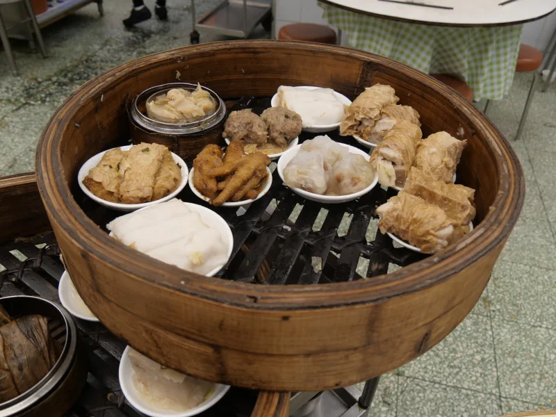
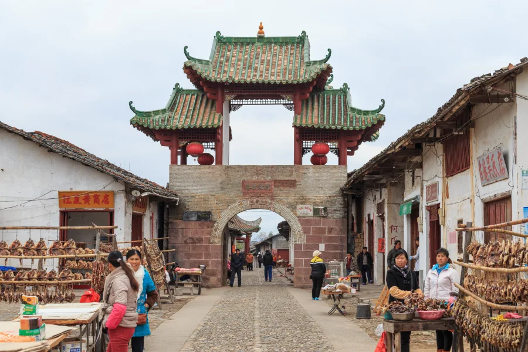

茶桌边，听得懂的第一句话
去茶楼饮早茶，有人斟茶，有人揭开蒸笼，还有人隔着两张桌就叫出了街坊的名字。刚学粤语的小朋友，也许听不全大人的闲谈，却知道一句「趁热食」之后，碗里就会多一只虾饺。
从广州、香港到悉尼，不同人家有不同的口音。你小时候听得最多的，是一句「饮茶啦」，还是有人推开门喊你的小名？
抬头看窗，低头看碟
在广州和珠江三角洲，一些老屋的山墙像两只锅耳，人们叫它「镬耳墙」。走近窗边，彩色玻璃嵌在木格里，棂花有海棠、方胜等式样。再看一只广彩茶碟，匠人把花鸟收进掌心大的一圈盘沿。认识广府文化，也可以从认出一个熟悉的形状开始。


家乡的名字，也跟着人走
家里长辈说起「返乡」，指的是哪一条村、哪一条街？对一些广府家庭来说，寻根会走到广东南雄的珠玑巷。江门新会的珠玑里、佛山南海九江的珠玑冈，也把这个名字留在了后来生活的地方。
旧图里，一群人站在砖拱门前，门额写着「珠璣古巷」。这一页下方印有「82」。整理者把它追溯到一本 1922 年出版的书，照片的拍摄年份尚待考。
翻看珠玑巷今昔图集 · 查 1922 年原书书目 · 读广州日报的地名寻访
2025 年，乡亲们在南雄参加第五届世广会。从韶关接旗到悉尼


从后台的一笔妆，到耳熟的一句歌
开锣前，演员对镜整理头面。等到登台，一个尾音拖长，一个眼神递出去，坐在台下的老戏迷就会意了。另一代人熟悉的乡音，也许来自收音机里的一首粤语流行曲：前奏才响起，已经跟着哼出了下一句。
2026 年 11 月，悉尼市政厅迎来「粤唱粤强」南太平洋赛区总决赛。走进悉尼的粤语歌会

一本从香港来到悉尼的会话书
这本《華英通語集全》的黄色扉页上，还能读到「光緒甲申重訂」。1884 年，香港文裕堂印行了这部会话书。如今它收藏在悉尼的 Ashfield。
另一页上，一行英文题记留下两个人的名字：梅光达（Quong Tart）把书赠给了雇员 Alf Hughes。一百多年后，我们还能在悉尼翻到这件小小的礼物。